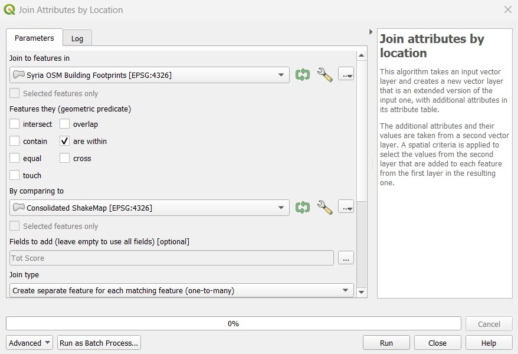

8.2 Evaluación de daños en edificios tras un terremoto mediante OpenStreetMap (OSM)
Esta sección proporciona:
- Una visión general de la relevancia del uso de datos OSM para la evaluación de daños post-terremoto.
- Profundización en los modelos de datos y adquisición de conjuntos de datos
- Instrucciones paso a paso para crear evaluaciones de daños utilizando datos OSM en SIG.
Resumen
Realizar una evaluación de daños en edificios es crucial después de un desastre natural para evitar más víctimas e identificar ubicaciones seguras para refugios temporales. La evaluación puede ayudar en los esfuerzos de respuesta y recuperación al priorizar las áreas con mayores daños, y proporcionar datos para evaluar los daños a la propiedad y estimar los costos de reparación. Este documento ofrece una guía paso a paso para utilizar los datos de OpenStreetMap en la evaluación de daños en edificios tras un terremoto, que puede personalizarse en función de los conjuntos de datos disponibles y del nivel de evaluación necesario.
Datos de OpenStreetMap sobre edificios
Lo primero que hay que tener en cuenta antes de realizar una evaluación de este tipo es la disponibilidad de conjuntos de datos de acceso público y descargables. La sección de Datos de Entrada de este documento contiene un buen número de repositorios de datos que son útiles para una evaluación de daños en edificios tras un terremoto. Uno de ellos es la base de datos OpenStreetMap, una plataforma cartográfica gratuita y de código abierto que proporciona huellas de edificios con información valiosa como la altura, el material y la capacidad. Está impulsada por colaboradores de OSM de todo el mundo, que en su mayoría son voluntarios que cartografían características geoespaciales y añaden información crítica basada en conocimientos locales.
La figura 1 muestra una clínica sanitaria de Filipinas cartografiada en OSM por el Proyecto PhilAWARE. El Proyecto PhilAWARE, como muchos otros proyectos cartográficos basados en OSM, creó su propio modelo de datos 1, que es una colección de etiquetas OSM que describen mejor los atributos de una característica que son significativos para el proyecto. Debido a que el proyecto PhilAWARE fue diseñado para proporcionar datos de situación a las oficinas locales de DRRM, etiquetas como backup_generator=no, building_material=concrete, y capacity_persons=<50 son críticas para determinar la posibilidad de que esta clínica permanezca operativa durante un desastre.
 "Fig 1." Clínica de salud mapeada en OSM a través del proyecto PhilAWARE.
"Fig 1." Clínica de salud mapeada en OSM a través del proyecto PhilAWARE.
En 2017, el Humanitarian OpenStreetMap Team (HOT), en colaboración con el Global Earthquake Model (GEM) e ImageCat, creó un esquema de datos para una base de datos de exposición global (GED4ALL) con el objetivo de ayudar a los actores locales y globales a identificar el riesgo y equiparlos para la toma de decisiones basada en datos. La siguiente tabla muestra un modelo de datos simplificado 2 de las etiquetas de uso común para los atributos de construcción seleccionados por GEM como cruciales para describir la integridad estructural de las infraestructuras durante un evento de peligro.
Tabla 1. Modelo de datos simplificado de GED4ALL sobre edificios
| Atributo del edificio | Clave OSM | OSM Descripción |
|---|---|---|
| Ocupación | building=* | Describa el propósito del edificio (residencial, comercial, público, uso_mezclado, industrial, agricultura, asamblea, gobierno, educativo, desconocido) |
| Alrededores | building:adjacency=* | describa las condiciones de vecindad del edificio (adosado, independiente). |
| Fecha de construcción o modernización | building:age=* | Etiqueta OSM de antigüedad propuesta, asociada a edificios (pre_2000, post_2000, desconocido) |
| Condición | building:condition=* | Describa la condición del edificio (buena, media, mala, desconocida) |
| Base geológica | building:geological_site=* | Describe el emplazamiento geológico sobre el que se construye el edificio (flat_land, river_bank, slopy_land, landslide_prone_area, flood_prone_area, river_bank) |
| Material del sistema de resistencia a cargas laterales | building:lateral:material=* | Etiqueta del material de resistencia a cargas laterales propuesto (hormigón_reforzado, hormigón, hormigón_acero, metal, mampostería_reforzada, mampostería, mampostería_confinada, tierra, tierra_reforzada, madera, otro, desconocido) |
| Sistema de resistencia a cargas laterales | building:lateral:system=* | Identifique el sistema estructural de los edificios (pórtico de momento, pórtico relleno, pórtico arriostrado, viga de poste, muro, muro de doble viga, losa plana, losa reticular, losa plana de relleno, losa reticular de relleno, híbrido, desconocido) |
| Altura | building:levels=* | Número de niveles sobre rasante de un edificio |
| Capacidad | capacity:persons=* | Describe el número de personas que puede albergar un edificio. |
| Techo | roof:material=* | Material exterior del tejado del edificio (mampostería, tierra, hormigón, metal, madera, tela, pizarra, piedra, arcilla, desconocido) |
| roof:shape=* | Formas de tejado bien conocidas (plano, inclinado, a un agua, en diente de sierra, curvo, complex_regular, complex_irregular, desconocido) |
Aunque no todos los edificios OSM tendrían el mismo número de atributos como se describe en el modelo de datos anterior, proporcionar a los usuarios datos ricos a nivel de edificio les permite generar análisis secundarios que pueden apoyar o validar los resultados de la evaluación de daños en edificios.
Entrada de datos
- Determine el área o áreas de interés: Antes de recopilar los datos, debe identificar un área de interés a la que se circunscribirá la evaluación. Puede ser a nivel nacional o de distrito, siempre que se encuentre dentro del área prioritaria o zona de impacto de la catástrofe.
- Enumerar y descargar todas las fuentes de datos necesarias: Empezar a organizar y recopilar datos sobre la catástrofe posterior al terremoto, datos de exposición, evaluaciones de daños en edificios existentes, etc.
Tabla 2. Lista de conjuntos de datos y repositorios de fuentes abiertas
| Datos | Descripción | Enlace a la fuente |
|---|---|---|
| USGS ShakeMap | información sobre el movimiento del suelo y la intensidad de las sacudidas | https://earthquake.usgs.gov/data/shakemap/ |
| Global Earthquake Model | evaluación del riesgo sísmico para localizar el impacto probable de las amenazas sísmicas | https://data.humdata.org/organization/gem-foundation |
| Copernicus Emergency Mapping Service | resultados de análisis (como evaluación de daños en edificios) sobre activaciones solicitadas a Copernicus | copernicus Dashboard |
| Solicitud del Servicio de Cartografía de Emergencia de Copernicus | guía sobre cómo solicitar el servicio de cartografía de Copernicus | Cómo utilizar Copernicus |
| Análisis de UNOSAT | resultados de análisis (como evaluación de daños en edificios) sobre activaciones solicitadas a UNOSAT | https://unosat.org/products |
| Solicitud del Servicio de Cartografía Humanitaria Rápida de UNOSAT | guía sobre cómo solicitar el servicio de cartografía de UNOSAT | https://unosat.org/services |
| Programa de datos abiertos MAXAR | imágenes de satélite que muestran la situación y los daños tras el terremoto | https://www.maxar.com/open-data |
| Repository | Description | Link to Source |
| Intercambio de Datos Humanitarios (HDX) | aloja capas de catástrofes y datos de exposición como los datos OSM exportados por HOT | https://data.humdata.org/ |
| Sistema Mundial de Alerta y Coordinación de Desastres (GDACS) | lista de conjuntos de datos sobre catástrofes (también contiene USGS ShakeMap) | https://www.gdacs.org/ |
| OpenAerialMap | almacena imágenes por satélite y de drones de organizaciones y particulares tras un terremoto | https://openaerialmap.org/ |
- Muchas de las fuentes de datos que se pueden utilizar para generar una evaluación de daños en edificios están repartidas en varias bases de datos y repositorios. Asegúrese de que dispone de todos los conjuntos de datos actualizados necesarios antes de comenzar la evaluación. Recuerde que los datos que utilice tendrán un gran impacto en la calidad y precisión de los resultados de la evaluación.
- Cite correctamente las fuentes de datos: Asegúrese de comprobar el tipo de licencia de cada conjunto de datos y aprenda a atribuirlos correctamente a su trabajo.

Escenario
Después de los terremotos de magnitud 7,8, 7,5 y 6,3 que afectaron a Siria en febrero de 2023, un grupo de respondedores entrenados está planeando ayudar a la gente a evacuar sus hogares. Para que el plan de respuesta sea eficaz, primero quieren identificar los puntos conflictivos de la ciudad donde es más probable que se destruyan edificios. A continuación, pretenden categorizar los diferentes tipos de daños en los edificios dentro de los puntos críticos para una mejor priorización. No se dispone de evaluaciones públicas de los daños en los edificios, pero MAXAR ha publicado imágenes por satélite de la zona tras el terremoto.
- **Asegúrese de que los formatos de archivo son compatibles con el software cartográfico que va a utilizar. Tenga en cuenta que la aplicación QGIS se utilizará a lo largo de los distintos procesos de esta demostración.
| Datos | Descripción | Enlace a la fuente |
|---|---|---|
| ShakeMap de USGS | Polígonos de intensidad de USGS a través de los Recursos de Eventos GDACS | M 7.8 en Türkiye el 06 Feb 2023 01:17 UTC - M 7.5 en Türkiye el 06 Feb 2023 10:24 UTC - M 6.3 en Türkiye el 20 Feb 2023 17:04 UTC |
| Huellas de edificios OSM anteriores al suceso | Datos de edificios OSM subidos al repositorio HDX | https://data.humdata.org/dataset/hotosm_syr_buildings (también pueden ser descargados desde (6.1) HOT Export Tool 3, Geofabrik, (7.3) Overpass API 4 , etc.). |
| Límites administrativos de OCHA | Límites administrativos cargados en el repositorio HDX | https://data.humdata.org/dataset/cod-ab-syr |
| MAXAR Open Data Program | Imágenes de satélite posteriores al terremoto | Satellite Imageries (incluye imágenes Planet y Maxar) |
- Consolidar los mapas ShakeMaps del USGS: Especialmente en el caso de catástrofes con múltiples eventos importantes, como el terremoto de Turquía-Siria, que tiene tres desencadenantes principales (eventos de M 7,8, M 7,5 y M 6,3), es fundamental comprender dónde se solapan los eventos para ver dónde es mayor el riesgo. Para ello, hay que realizar una unión de las capas de catástrofes asegurándose de que los campos de atributos correspondientes a los niveles de intensidad se importan todos a la capa de salida.
 "Fig 2." Consolidación de USGS ShakeMaps usando QGIS.
"Fig 2." Consolidación de USGS ShakeMaps usando QGIS.
- Recortar la capa consolidada de catástrofes: Recortar el USGS ShakeMap consolidado dentro de Siria utilizando el conjunto de datos de límites administrativos de la OCHA.
- 4. Unir atributos de la capa de desastre a las huellas de edificios OSM: Superponer las huellas de edificios OSM a la capa de desastre y buscar Unir atributos por ubicación en la caja de herramientas de procesamiento de QGIS. Puede utilizar dentro como predicado geométrico para capturar las huellas que están dentro de la extensión de la capa de desastre. Añada el campo Puntuación de intensidad total a la capa resultante y utilícelo para clasificar las huellas de los edificios.
 "Fig 3." Configuración de parámetros para el proceso “Join Attributes by Location” en QGIS.
- Se identificaron un total de 967.813 edificios dentro del USGS Consolidated ShakeMap. Esto representa el 90% de todos los edificios mapeados en OSM para Siria.
- **Identificar las ciudades donde los edificios experimentaron intensidades de sacudidas de severas a violentas, ya que son las que tienen más probabilidades de haber sufrido daños como consecuencia de los riesgos sísmicos.
 "Fig 4.“Huellas de edificios OSM clasificadas sobre los límites administrativos de Siria.
"Fig 4.“Huellas de edificios OSM clasificadas sobre los límites administrativos de Siria.
- La inspección visual revela que los edificios más vulnerables se encuentran en Harim/Harem y en la parte noroeste de Idlib/Idleb. También es probable que sufran daños los edificios de la parte noroeste de Afrin. En función de las etiquetas OSM disponibles, al abrir la tabla de atributos de las huellas clasificadas de los edificios se mostrará información crítica sobre la exposición, como el nombre, el tipo y la dirección del edificio.
 ”Fig 5.“Parte de la tabla de atributos del edificio clasificado.
”Fig 5.“Parte de la tabla de atributos del edificio clasificado.
- Utilizar las imágenes post-terremoto de MAXAR para validar e identificar los tipos de daños: Utilizar las imágenes post-terremoto de MAXAR como capa de validación de las zonas de daños en edificios previstas. El siguiente ejemplo muestra cómo se utilizaron los grados de daños de Copernicus para determinar el nivel de daños por edificio en Harim/Harem, Siria.
 ”Fig 6.“Se identificaron los edificios dañados utilizando las imágenes de MAXAR posteriores al terremoto.
”Fig 6.“Se identificaron los edificios dañados utilizando las imágenes de MAXAR posteriores al terremoto.
 ”Fig 7." Grado de daños en edificios de Copernicus 5
”Fig 7." Grado de daños en edificios de Copernicus 5
La validación a distancia mediante imágenes posteriores al seísmo es beneficiosa, sobre todo para identificar edificios muy dañados. En cambio, los daños menores en infraestructuras son difíciles de identificar a partir de imágenes. Por eso se sigue recomendando la validación sobre el terreno para categorizar mejor los distintos tipos de daños en edificios.
Conclusión
Los datos de OpenStreetMap (OSM) son útiles para realizar análisis rápidos, como la evaluación de los daños en edificios tras un terremoto. El crowdsourcing se utiliza comúnmente para recopilar datos OSM, lo que permite recoger un gran volumen de datos de forma rápida y eficiente. Esta información puede utilizarse para determinar el alcance de los daños en los edificios de la zona afectada.
Una de las formas en que los datos OSM pueden utilizarse para la evaluación de daños tras un terremoto es sirviendo como datos de exposición. Esto significa que las huellas de los edificios OSM se pueden utilizar para estimar el número de edificios con daños probables sobre la base de los conjuntos de datos de intensidad del terremoto. Superponiendo el conjunto de datos de intensidad a las huellas de edificios OSM, es posible identificar qué edificios es probable que hayan sufrido daños.
Además, los datos OSM pueden vincularse a los análisis de daños existentes, permitiendo que las huellas de los edificios ayuden a identificar y validar los diferentes grados de daños dentro de un área. Esto significa que los datos OSM pueden ser utilizados para complementar otros tipos de datos y proporcionar una comprensión más completa de la magnitud de los daños causados por el terremoto.
Es importante señalar que la calidad y la cantidad de los datos OSM disponibles para la evaluación de los daños tras el terremoto dependerán del nivel de cartografía que se haya realizado en las zonas afectadas antes de la catástrofe. Las zonas que estén bien cartografiadas tendrán ventaja en cuanto a la cantidad y calidad de la evaluación que pueda realizarse. Por eso es fundamental dar prioridad a la cartografía de las zonas de riesgo de catástrofes en OSM, incluso antes de que se produzca una catástrofe. Al hacerlo, es posible recopilar datos más precisos y útiles que pueden utilizarse para evaluar los daños y ayudar en las labores de socorro tras un terremoto.
Referencias
-
PhilAWARE Data Model, Obtenido de https://wiki.openstreetmap.org/wiki/PhilAWARE_Data_Model ↩︎
-
GED4ALL Data Model, Obtenido de https://wiki.openstreetmap.org/wiki/GED4ALL ↩︎
-
HOT Export Tool, Obtenido de https://toolbox.hotosm.org/pages/data-export/6.1-hot-export-tool/ ↩︎
-
Overpass Turbo, Obtenido de https://toolbox.hotosm.org/pages/data-use-and-analysis/7.3_web_and_interactive_maps/ ↩︎
-
Copernicus Damage Assessment, Obtenido de https://emergency.copernicus.eu/mapping/book/export/html/138313 ↩︎